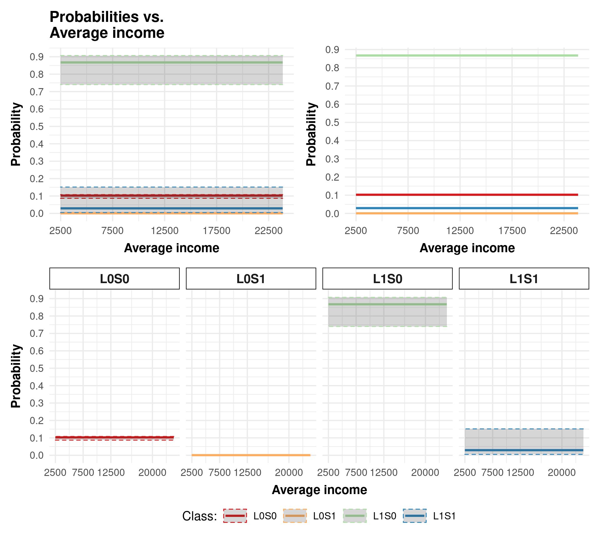

Multinomial model: average income plot
Leidimari Neves do Prado and Henrique Laureano
Last modification on 2022-10-08 13:36:21

R (R Core Team 2022).
R Core Team. 2022. R: A Language and Environment for Statistical Computing. Vienna, Austria: R Foundation for Statistical Computing. https://www.R-project.org/.